Chuyên gia & nhà nghiên cứu
Đóng góp tri thức, kinh nghiệm và giải pháp cho các sáng kiến đổi mới.
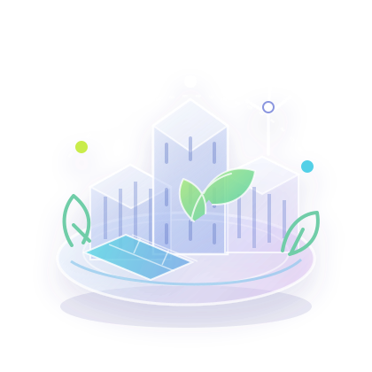
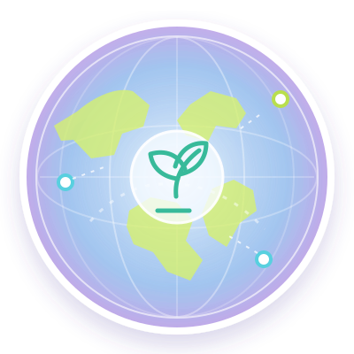
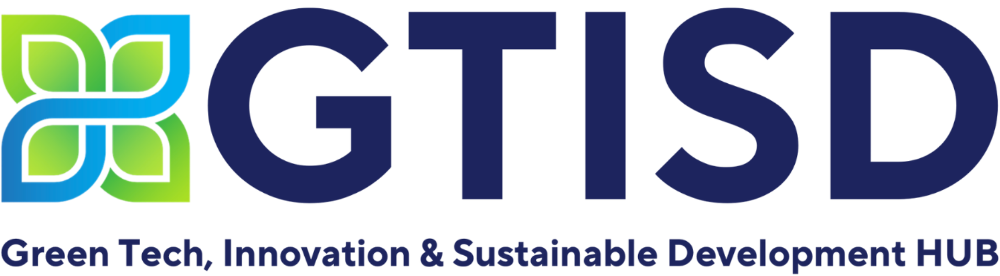
GTISD · CAFE CÔNG NGHỆ XANH
TUẦN LỄ KHAI TRƯƠNG
01/12 – 06/12/202608:30 – 17:00 mỗi ngày
Kết nối hợp tác vì sự phát triển bền vững.
40 P. Ngô Quyền, Cửa Nam, Hà Nội
Khám phá GTISD HubVỀ CHÚNG TÔI
Trung tâm Giao dịch Công nghệ Xanh, Đổi mới Sáng tạo và Phát triển Bền vững (GTISD Hub) là mô hình tổ chức uy tín, đóng vai trò kết nối đa ngành, đa bên trong hệ sinh thái phát triển bền vững. GTISD quy tụ chuyên gia, tổ chức, doanh nghiệp và nhà đầu tư, đồng hành cùng các sáng kiến công nghệ xanh và đổi mới sáng tạo.
A CONNECTED ECOSYSTEM
Kết nối các thành phần cùng tham gia vào hệ sinh thái phát triển bền vững.
Đóng góp tri thức, kinh nghiệm và giải pháp cho các sáng kiến đổi mới.
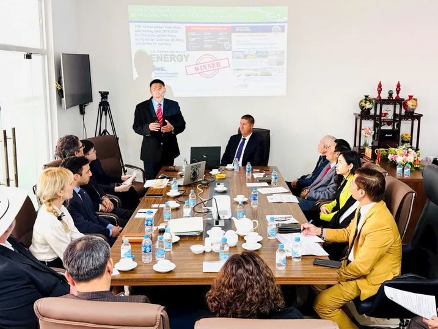
Kết nối nhu cầu, công nghệ và cơ hội hợp tác trong các ngành.
Liên kết nguồn lực và các bên liên quan để thúc đẩy phát triển bền vững.
CHƯƠNG TRÌNH HOẠT ĐỘNG
KẾT NỐI · TRẢI NGHIỆM · GIAO DỊCH
Không gian giới thiệu, trưng bày và kết nối các giải pháp công nghệ xanh với nhu cầu ứng dụng.
THỨ SÁU · 04/12/2026
CHƯƠNG TRÌNH DỰ KIẾN · 08:30–11:00
Ra mắt GTISD Hub, chia sẻ tầm nhìn phát triển, kết nối đối tác và khởi động Cộng đồng Tiêu dùng Xanh.
GTISD Hub · 40 Ngô Quyền, Hà Nội
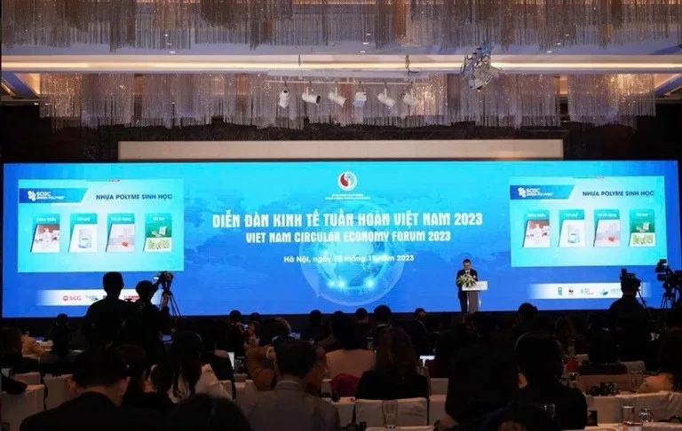
ĐỊNH HƯỚNG PHÁT TRIỂN
GTISD HUB · GREEN TECH · INNOVATION · SUSTAINABILITY
Xây dựng điểm đến công nghệ xanh, đổi mới sáng tạo và phát triển bền vững.
Thúc đẩy hệ sinh thái khởi nghiệp quốc gia; hỗ trợ chuyển đổi xanh, chuyển đổi số và tăng trưởng bền vững.
Đồng hành cùng mục tiêu Net Zero quốc gia.
PARTNER NETWORK
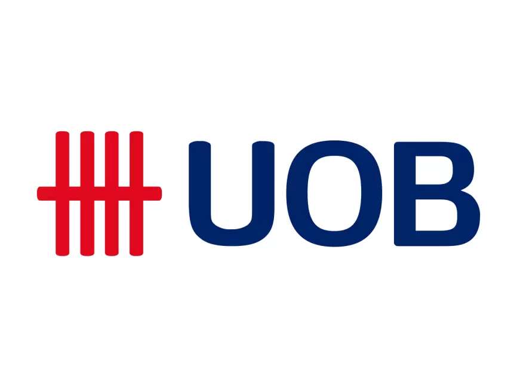
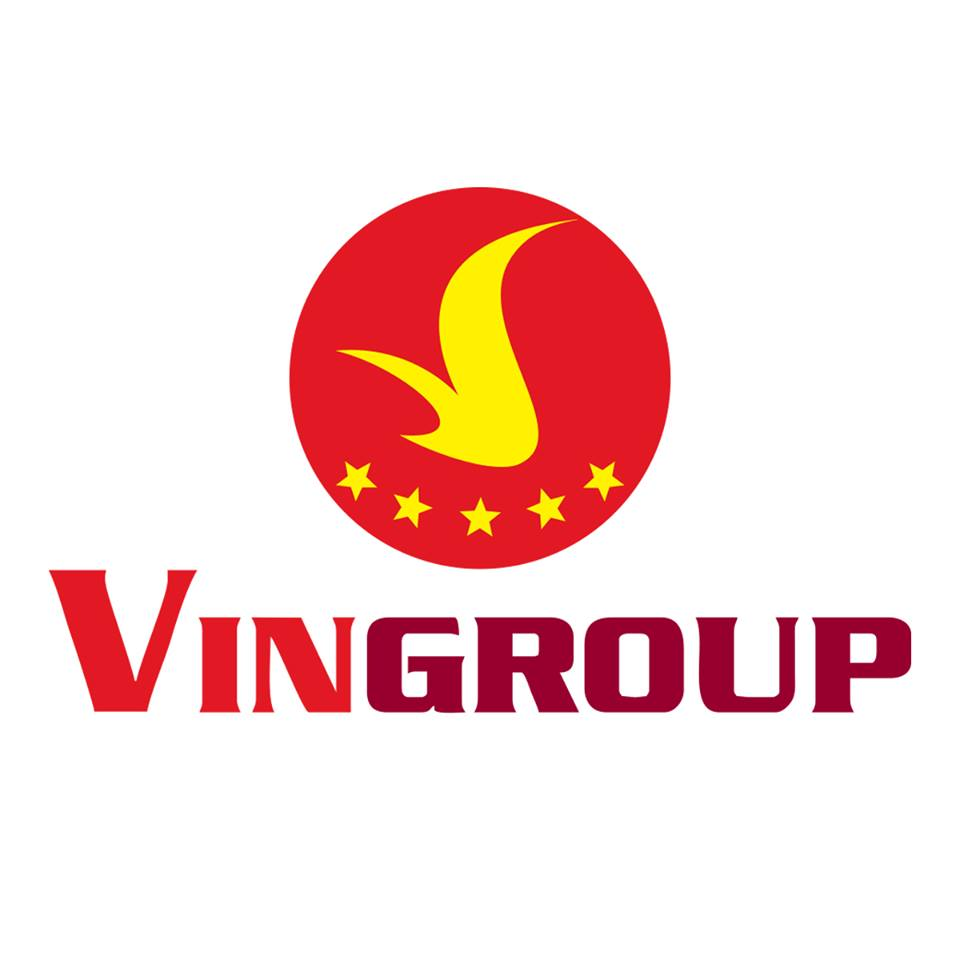
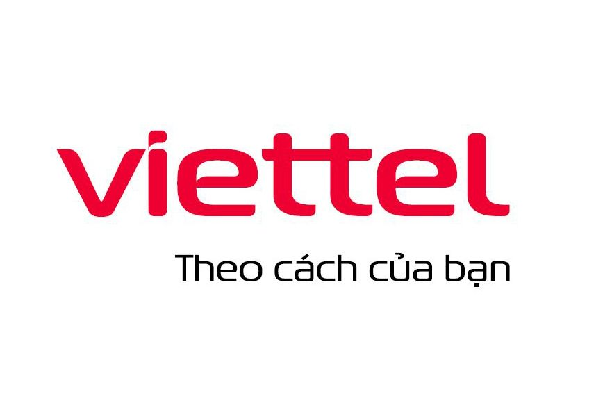
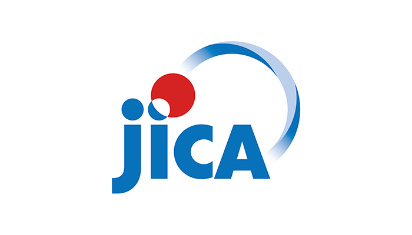
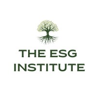
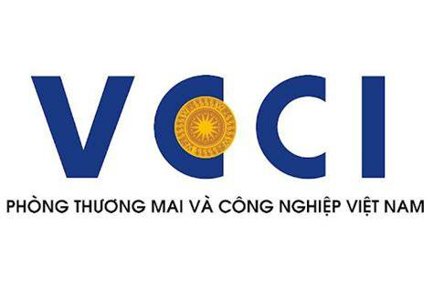
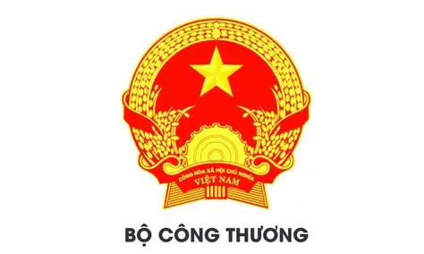
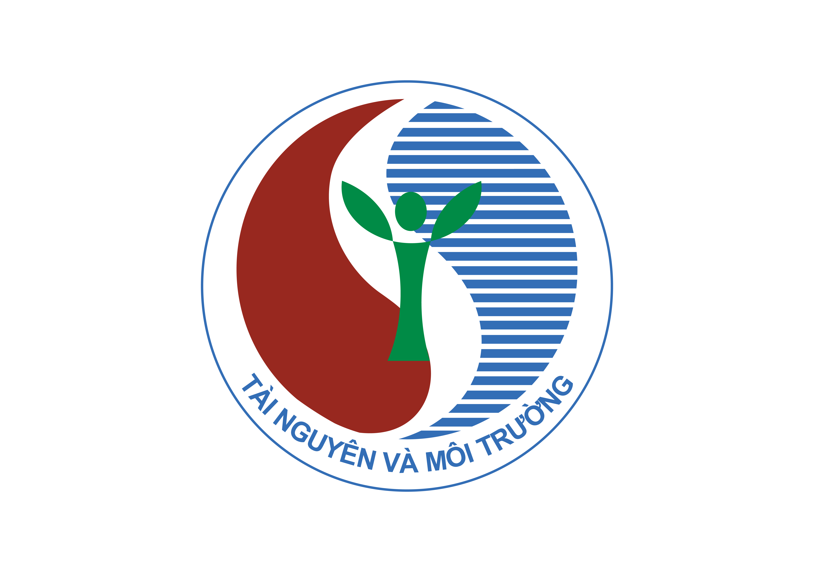
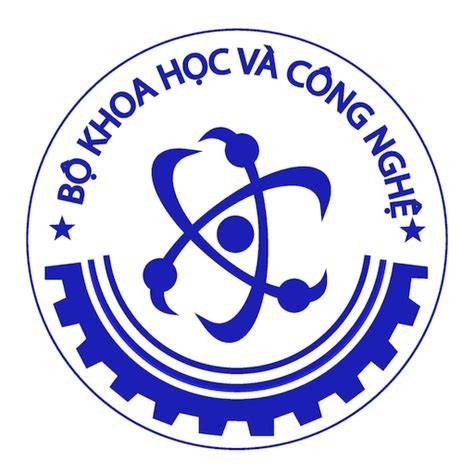
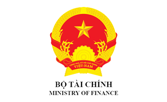
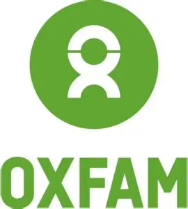
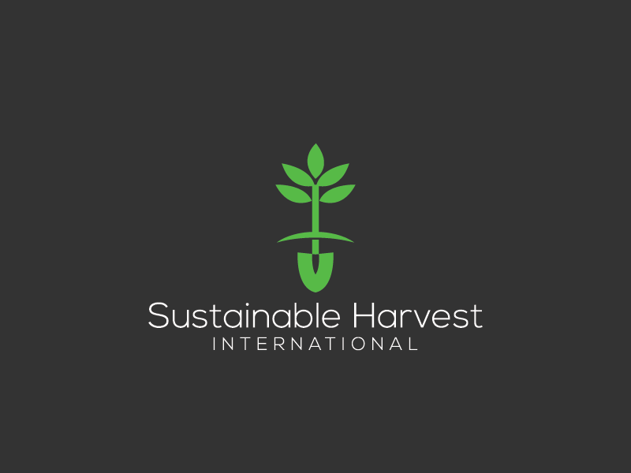
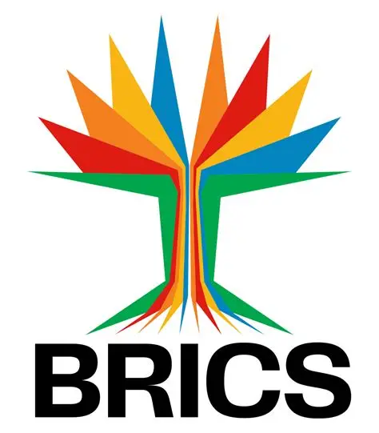
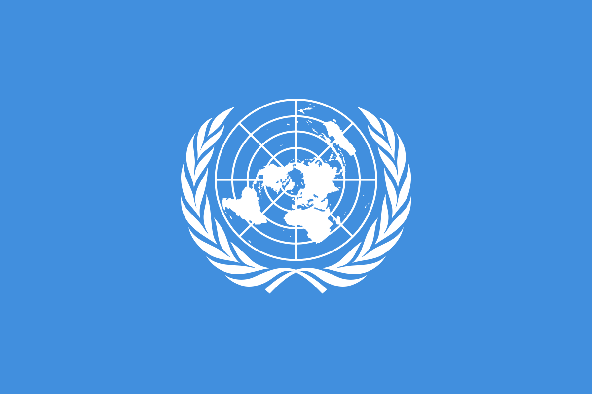
A LOOK INSIDE THE HUB